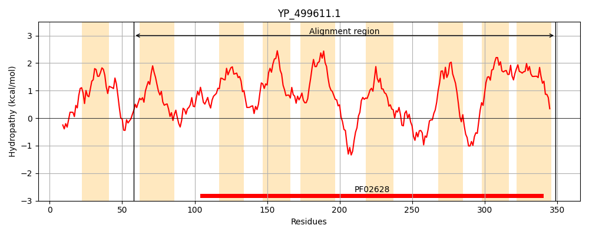
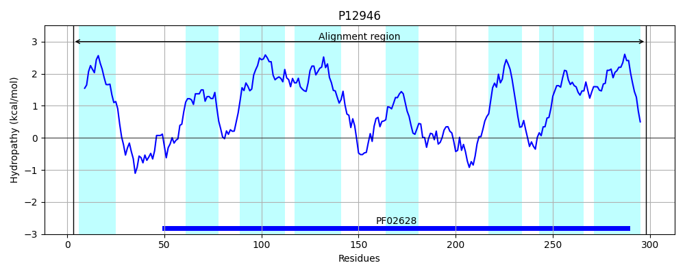
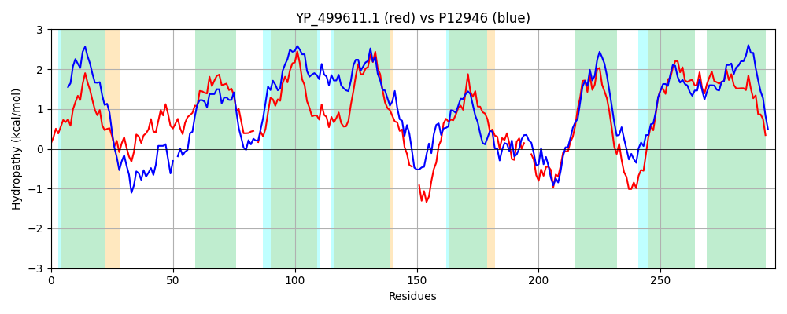

Hit Accession: P12946
Hit TCID: 3.D.4.4.1
Hit Description: gnl|BL_ORD_ID|9073 gnl|TC-DB|P12946|3.D.4.4.1 Heme A synthase OS=Bacillus subtilis GN=ctaA PE=1 SV=1
Mach Len: 297
e:0.000000
Query TMS Count : 9
Hit TMS Count: 8
TMS-Overlap Score: 7.650000
Predicted Substrates:CHEBI:5584;hydron
BLAST Alignment:
Score: 590 , Bit scores: 231 bits, E-value: 2.9e-74, Alignment length: 297, Percentage identity: 43
Query: 58 KNLKWLGVVATLMMTFVQLGGALVTKTGSADGCGSSWPLCHGALIPEFFPIDTIIELSHRAVSALSLLMVLWLVITAWKHIGYI-KEIKPLSIISVGFLLLQALIGAAAVIWQQNDYVLALHFGISLISFSSVFLITLIIFSIDQKYEA--DELYIKKPLRRLTWLMAIIIYCGVYTGALVRHADASLAYGGWPL--PFHDLVPHSEQDWVQLTHRIMAFIVFTIIMITYIHAVKNYPNNRTVHYGYTAAFILVILQVITGALSIMTNVNLIIALFHALFITYLFGMTTYFIMLMLR 349
K LK LGV+ T +M V +GGALVTKTGS GCG WPLCHG PE P +IIE SHR S +S+++VL L +W+ I I +E L+I+S+ FL LQAL+GA AV++ N ++ALHFGISLISF+SV ++TL+IF D+ L I K ++ + I Y VYTGA VRH ++SLA PL P ++ +P +WVQ+ HR A ++F I++ +HA+ +Y + + + +G+ + I + LQ ++G + + + + L AL H+ FI LFG+ YF++L+ R
Sbjct: 3 KALKALGVLTTFVMLIVLIGGALVTKTGSGQGCGRQWPLCHGRFFPELNPA-SIIEWSHRFASGISIILVLSLAFWSWRKITPIFRETTFLAIMSIIFLFLQALLGALAVVFGSNALIMALHFGISLISFASVLILTLLIFEADKSVRTLVKPLQIGKKMQFHMIGILIYSYIVVYTGAYVRHTESSLACPNVPLCSPLNNGLPTQFHEWVQMGHRAAALLLFVWIIVAAVHAITSYKDQKQIFWGWISCLIFITLQALSGIMIVYSELALGFALAHSFFIACLFGVLCYFLLLIAR 298 | Protein Hydropathy Plots: |
|---|
|  |  |
Pairwise Alignment-Hydropathy Plot:
|
|---|
|  |